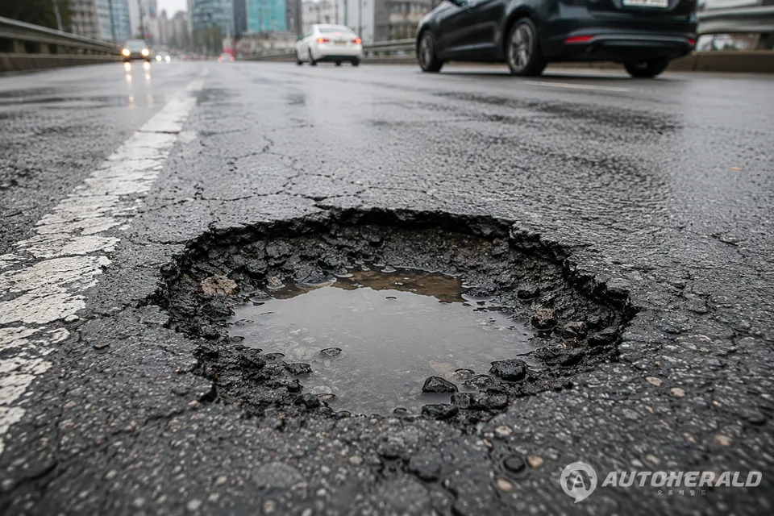
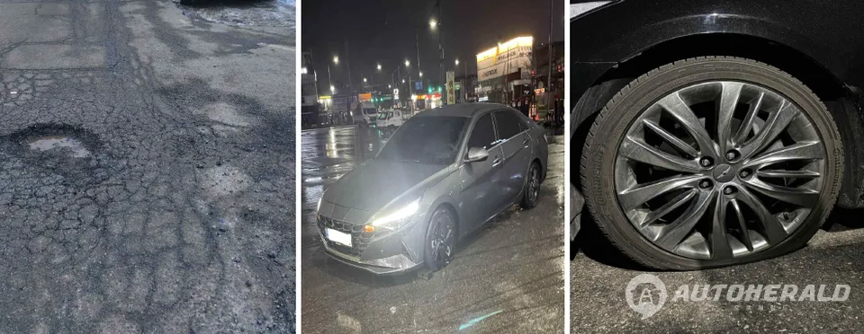

▲ 집중호우가 지나간 도로에 생긴 포트홀. 물이 고여 있으면 깊이를 가늠하기 어렵다
비가 그치면 도로가 안전해질 것 같지만 그렇지 않습니다. 물이 빠진 자리에 구멍이 남습니다.
집중호우가 지나간 뒤 도로 곳곳에 생기는 포트홀(도로 파임)은 차량 손상은 물론 2차 사고로 이어질 수 있습니다. 그리고 더 위험한 것은 포트홀 자체가 아니라, 그것을 피하려는 운전자의 행동입니다.
1. 언제 많이 생기나
포트홀은 아무 때나 생기지 않습니다. 국민권익위원회가 2024년 발표한 도로 파임 관련 민원 분석에 따르면, 2022년 1월부터 2024년 2월까지 접수된 민원은 1~2월과 7~8월에 몰렸습니다.
눈과 비가 잦은 시기입니다. 두 계절 모두 노면에 물이 스며드는 조건이 만들어집니다.
| 시기 | 조건 |
|---|---|
| 1~2월 | 눈·결빙 — 얼었다 녹는 과정 반복 |
| 7~8월 | 집중호우 — 노면 수분 침투 |
| 9월 | 태풍에 따른 집중호우 — 주의 구간 |
9월에도 태풍 등의 영향으로 집중호우가 발생할 수 있는 만큼, 비가 그친 뒤의 노면 상태에 주의해야 합니다.

▲ 아스팔트가 통째로 떨어져 나간 포트홀. 깊이와 가장자리 모두 위험 요소다 ⓒ 오토헤럴드
2. 왜 비 온 뒤에 생기나
순서가 있습니다. 포트홀은 도로 노후화 등으로 생긴 아스팔트 균열에 물이 스며든 상태에서, 차량의 반복적인 하중이 가해지면서 노면이 떨어져 나가 발생합니다.
집중호우가 이어진 뒤에는 노면에 스며든 수분의 영향으로 새로운 포트홀이 생기거나 기존 파임이 커질 가능성이 있습니다.
📍 물이 고인 포트홀이 더 위험한 이유
비가 갠 직후에는 포트홀에 물이 고여 있는 경우가 많습니다.
겉으로는 그냥 물웅덩이처럼 보이지만 깊이를 알 수 없습니다. 얕은 웅덩이로 판단하고 속도를 유지한 채 통과하면 타이어와 휠이 그대로 충격을 받습니다.
3. 차가 받는 손상
포트홀은 타이어와 휠, 서스펜션 등 차량 부품을 손상시킬 수 있습니다.
그러나 더 큰 문제는 따로 있습니다. 이를 피하려고 운전자가 갑자기 차로를 변경하거나 급제동할 경우입니다. 주변 차량과의 충돌이나 후방 추돌 등 2차 사고로 이어질 수 있습니다.
| 구분 | 내용 |
|---|---|
| 1차 — 차량 손상 | 타이어 손상, 휠 변형, 서스펜션 충격 |
| 2차 — 사고 | 급조향에 따른 측면 충돌, 급제동에 따른 후방 추돌 |

▲ 차로 한가운데 생긴 파임. 피하려면 차로를 넘어야 하는 위치가 가장 위험하다 ⓒ 오토헤럴드
4. 발견했을 때 해야 할 것
주행 중 포트홀을 발견했다면 급하게 운전대를 조작하거나 급제동하지 말아야 합니다. 주변 차량의 움직임을 살피면서 속도를 줄이는 것이 먼저입니다.
차로 변경이 필요한 경우에는 방향지시등을 켜고 주변 차량의 위치와 속도를 확인한 뒤 이동해야 합니다.
| 상황 | 해야 할 것 | 하지 말아야 할 것 |
|---|---|---|
| 멀리서 발견 | 감속, 주변 차량 확인 | 급가속으로 앞질러 피하기 |
| 차로 변경 가능 | 방향지시등 후 이동 | 무신호 급조향 |
| 변경 불가 | 속도만 줄이고 통과 | 급제동 |
| 통과 후 | 안전한 곳에 정차 후 점검·신고 | 주행 중 촬영·신고 |
5. 신고는 차를 세우고
포트홀을 발견한 뒤 주행 중 휴대전화로 사진을 촬영하거나 신고하는 것도 피해야 합니다.
안전한 장소에 차량을 정차한 뒤 도로 파임의 위치와 상태를 확인하고 관계기관에 신고하는 것이 안전합니다. 위치를 정확히 남겨야 보수도 빨라집니다.

▲ 국민권익위원회에 접수된 도로 파임 민원 사례. 신고가 쌓여야 보수 우선순위가 잡힌다 ⓒ 국민권익위원회
6. 결국 기본으로 돌아갑니다
한국도로교통공단은 포트홀에 대비해 평소보다 속도를 낮추고 앞차와 충분한 안전거리를 유지할 것을 권고했습니다. 전방을 주시하면서 갑작스러운 노면 변화에 대응할 수 있도록 여유를 두고 운전하는 것도 중요합니다.
한국도로교통공단 관계자는 "집중호우 이후에는 예상하기 어려운 노면 상황이 발생할 수 있어 평소보다 여유 있게 운전하는 것이 중요하다"며 "속도를 줄이고 충분한 안전거리를 확보하는 등 기본적인 안전수칙을 지켜야 한다"고 말했습니다.
정리하면 세 가지입니다. 비 온 뒤에는 속도를 줄일 것, 포트홀을 봐도 급하게 피하지 말 것, 신고는 차를 세우고 할 것입니다.